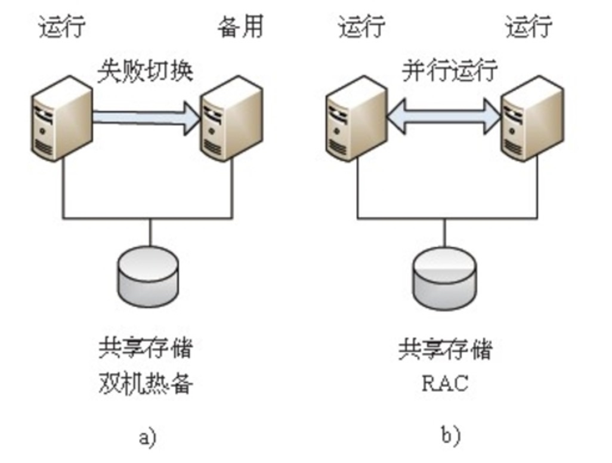

Oracle集群产品RAC
了解 集群产品 RAC 的特点 与 劣势
RAC的特点
1. 双机并行
RAC是一种并行模式，并不是传统的主备模式。也就是说，RAC集群的所有成员都可以同时接收客户端的请求
两个节点在传统的双机热备环境中，始终有一台机器作为备用机，只有当主节点出现问题的时候才会切换到备用机上;如果主机一直没有出现问题，那么备用机始终处于空闲状态，这在资源的利用上以及成本方面都是巨大的浪费。但RAC是一种并行模式的架构，也就是说，两个节点的集群节点间是一种并行运行的关系，当一台机器出现问题，请求会自动转发到另一台机器，没有任何一台机器作为备用机一直不被使用，这样就充分利用了服务器资源。同时，传统的双机热备构架在出现问题时，常常需要数分钟的切换时间，而RAC在出现问题时，针对存在的会话只需要数十秒的时间就可以完成失败切换过程，对新会话的创建不会产生影响，在切换时间上也有比较大的优势。

2. 高可用性
RAC是Oracle数据库产品高可用性的解决方案，能够保证在集群中只要有一个节点存活，就能正常对外提供服务
3. 易伸缩性
RAC可以非常容易地添加、删除节点，以满足系统自身的调整
RAC为需要重新规划的应用提供了易扩展性。为了在系统初始阶段保持较低的成本，避免造成不必要的浪费，集群可以按照标准硬件配置，选择适当的服务器资源、存储资源来搭建数据库环境。当系统需要更多的处理能力或者需要增加存储时，通过添加另一台服务器或存储设备到集群中，能够在不停机的情况下获得水平的扩展。在一个集群中， Clusterware和RAC支持多达100个集群节点。
>当某个集群的处理能力过剩，另一个集群的处理能力不够时，可以从处理能力过剩的集群移动一个节点到处理能力不够的集群中。这样能够充分利用服务器资源，节约成本。11gR2版本中推出了网格即插即用(Grid Plug and Play，GPnP)，可以实现节点的快速添加
4. 低成本
能使用较低廉的服务器来实现高可用性、高吞吐量的集群环境，这要比通过对某台高端服务器增加硬件实现高可用性、高吞吐量花费的成本低很多
通过多台普通的PC服务器组成一个集群，可以提高集群的处理能力，这样要比采用一台高性能的服务器的成本低很多。如果想提高系统的处理能力，给集群添加节点比为高性能服务器添加硬件要容易得多。另外，使用集群还能动态地移除节点，更加充分地利用管理者掌握的所有服务器资源，从服务器整体使用上降低了服务器的采购成本。越来越多的企业愿意将集群解决方案应用到他们的系统中，以降低成本，提高系统的可用性
5. 高吞吐量
随着节点数的增加，整个RAC的吞吐量也在不断增长
RAC是由多台服务器构成的逻辑主体，比单台数据库服务器能接收更多的客户端请求。这在要求高吞吐量的系统中，能够得到非常明显的体现。在RAC的架构中，多个实例分布在多个服务器上，能同时打开同一个数据库，而每个实例能够接收相等数量的客户端请求，这样，随着服务器的增加，吞吐量也在不断地增加。
劣势
1. 稳定性
数据库的稳定运行是系统稳定运行的基础和前提，数据库的运行依赖于操作系统、服务器、存储设备等软硬件设备的运行情况。
由于各种硬件设备、操作系统的厂商不同，有时候在兼容性上会存在问题，即使同一个厂商的服务器，由于驱动、固件版本的不同也可能导致硬件出现问题以及与其他设备的兼容性问题。同时，由于RAC本身也存在不少bug，很多部署的RAC环境缺乏在上线前对环境的检查和测试，导致在运行过程中出现一系列不稳定的情况，这样高可用性并没有得到充分的体现。
由此来看，稳定的硬件环境加上稳定的RAC版本，决定着RAC运行的稳定性。数据库工程师与硬件工程师在安装配置前大量的环境检查、验证，以及部署后的大量测试工作都是非常重要的。
2. 高性能
高性能也是大部分从单机环境迁移到RAC环境比较头疼的问题，RAC并不是高性能的解决方案。在目前普遍使用千兆网络的硬件环境中，很多时候系统的数据库从原来的单机迁移至RAC环境，系统的性能反而下降。在这种情况下，数据库管理员应该根据RAC的特点对系统调整提出合理的建议，经过合理的设计、开发，使用RAC是能够提高系统的处理性能的